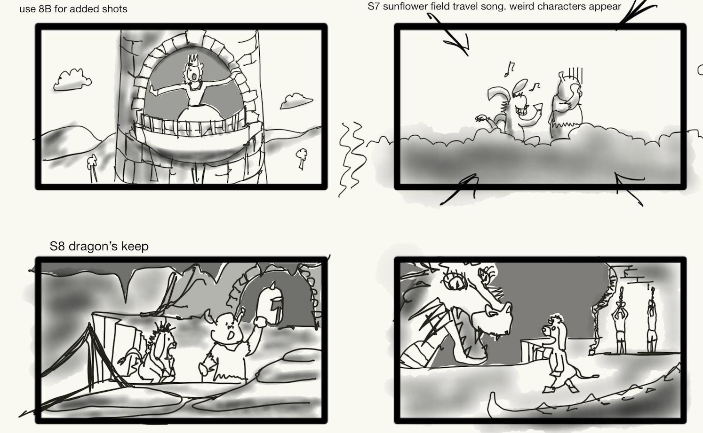
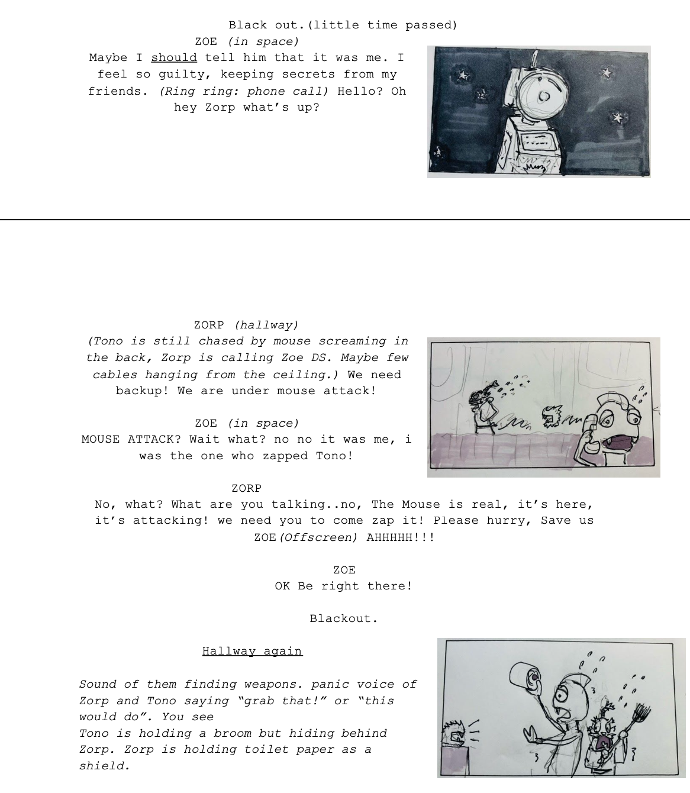
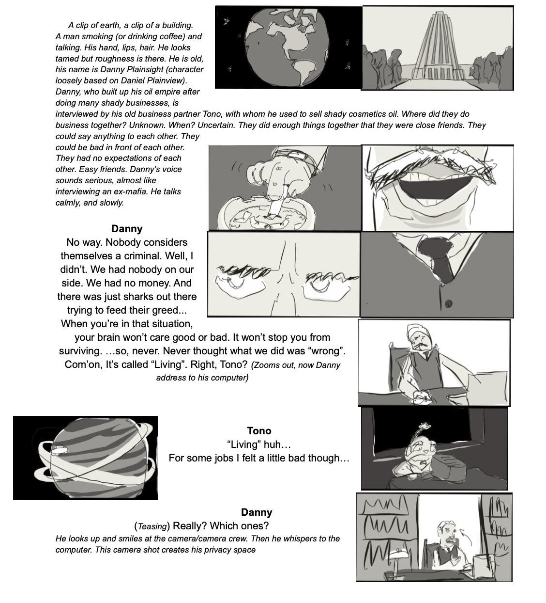

Yusuke Soi
Storyboards
Shrek the musical @ Tri-school Productions
Role: Producer, Art director, Editor
During the pandemic, most of high school theater shows were forced to adapt to perform online or create filmed performances. Shrek the musical was a 2h show that we filmed student actors individually and separately in front of a green screen to follow CDC rules for social distancing.

×

Anywhere but Earth Ep.3 @ Socks and Buttons production
Role: Producer, director, Editor
A puppet web series, "Anywhere but Earth" was a collaboration of theater artists from children's theaters in the Bay Area. An alien captain, his robot friend, and a old samurai journey through space. They find friendships and hurdles of cultral misunderstandngs.

×

Tono's Phone Call @ Socks and Buttons Production
Role: Producer, director, Editor
A web series of an old samurai puppet interviewing his friends. The series celebrates the Bay Area theater artists through short sketches.

×